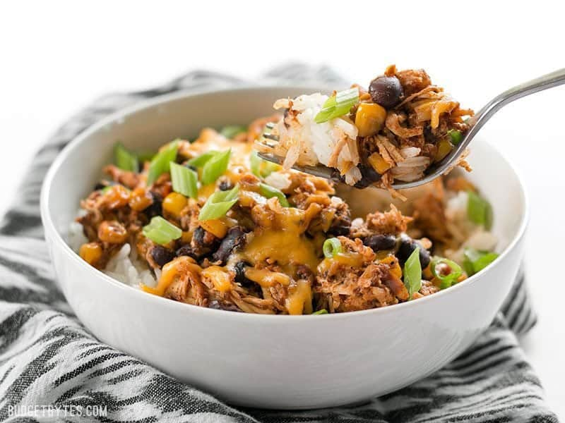

Taco Bowl Recipe

Description
This is a recipe for taco bowls made in an Instant Pot. It's a tasty mix of rice, black beans, chicken, corn, seasoning, and salsa!
The rice is cooked in a rice cooker. Everything else is cooked in the Instant Pot.
Ingredients
- 2 chicken breasts
- 1 can black beans
- 1 jar of green salsa
- 1 bag of frozen corn
- 3 tbsp of taco seasoning
- 2 cups brown rice
Instructions
Brown Rice
- Add 2 cups brown rice to rice cooker bowl
- Fill with water to appropriate level for your rice cooker
- Turn rice cooker on
Taco Bowl
- Add chicken breasts, black beans, frozen corn, taco seasoning, and green salsa to Instant Pot bowl
- Put lid on Instant Pot. Check that the pressure release valve is closed.
- Turn Instant Pot on. Select "Poultry" setting and set timer to 15 minutes.
- Once Instant Pot is done cooking, allow to naturally release pressure for 20 minutes.
- Shred the chicken breast and stir to combine
- Serve taco bowl over rice and top with whatever you like!